← 返回阅读库 · 原论文目录
论文讲解阅读文档 · 表征学习 · v207
Video Rep. Learning by Recognizing Temporal Transformations[2007.10730]
视频时长 00:06:33；讲解文字 2,709 字符；提取讲解画面 36 张。按视频原顺序阅读，每段文字保留时间戳。
文字来自整段视频的自动语音转写，按自然停顿分段，并与 PPT / 论文页面 / 演示画面对齐。未将讲解压缩为摘要；术语、数字和口述公式请结合画面及原论文核对。 阅读稿已校正规范部分明确术语误识别；原始逐字稿和每处修改记录另行保留。
讲解画面为源视频截图（640×360），不是可编辑 PPT 文件。全片按每秒 2 帧扫描内容变化，逐步展开页保留；连续动画保留代表画面。清晰度受源视频限制。
下载完整资料包 · 含离线 HTML、PDF、Word、全部 PPT 画面和字幕。
原论文与材料
Video Representation Learning by Recognizing Temporal Transformations · 下载完整 PDF（19 页）
按时间阅读
00:00:00–00:00:20 · 画面 001
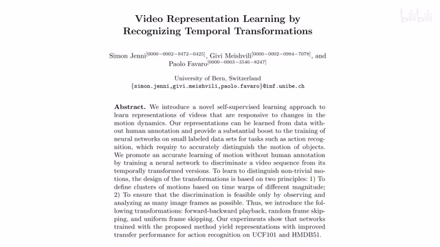
00:00:00–00:00:20 · 画面 001大家好,今天我们来快速说一篇论文 Video Representation Learning by Recognizing Temporal Transformations。这篇论文是一个很经典的用时序上的信息各种变换作为我们的辅助任务，帮助我们学到一个好的 Video Representation 这么一个自监督的文章。那么我们直接来看
00:00:20–00:00:24 · 画面 002
00:00:20–00:00:24 · 画面 002那么 video 对于 image 来说，它多的是时间轴上的信息。而在时间轴上做的各种变化可以帮助我们进一步构建不同的下游的辅助任务，帮我们学到一个好的 representation。这里作者提出了四种有意思的 transformation，我们一个个来看。首先就是 speed，就是通过调整视频的播放的速度，怎么调整就是我按照不同的间隔去均匀的在时间轴上采样
00:00:24–00:00:28 · 画面 003
00:00:24–00:00:28 · 画面 00300:00:28–00:00:32 · 画面 004
00:00:28–00:00:32 · 画面 00400:00:32–00:00:36 · 画面 005
00:00:32–00:00:36 · 画面 00500:00:36–00:00:40 · 画面 006
00:00:36–00:00:40 · 画面 00600:00:40–00:00:44 · 画面 007
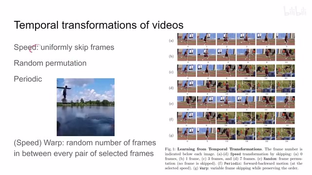
00:00:40–00:00:44 · 画面 00700:00:44–00:00:47 · 画面 008
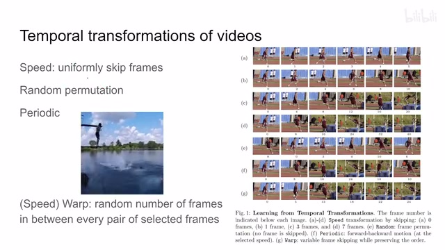
00:00:44–00:00:47 · 画面 00800:00:47–00:00:51 · 画面 009
00:00:47–00:00:51 · 画面 009采出我们的这个帧来。这样子呢，我们一帧一帧播放的时候呢，由于他们的这个两帧之间的间隔不一样，所以呢就产生了不同的这个视频速度的这样一个效果啊。这个是最经典的这个 speed。当然还有 random permutation，就是我打乱这个视频的顺序。第三种呢是这个 periodic，就是周期性的。那怎么操作呢？就像这里有一个图啊，我的视频呢先正着放，然后呢再倒着放啊，假如存在一个周期性
00:00:51–00:00:55 · 画面 010
00:00:51–00:00:55 · 画面 01000:00:55–00:00:59 · 画面 011
00:00:55–00:00:59 · 画面 01100:00:59–00:01:01 · 画面 012
00:00:59–00:01:01 · 画面 01200:01:01–00:01:05 · 画面 013
00:01:01–00:01:05 · 画面 01300:01:05–00:01:09 · 画面 014
00:01:05–00:01:09 · 画面 01400:01:09–00:01:13 · 画面 015
00:01:09–00:01:13 · 画面 01500:01:13–00:01:17 · 画面 016
00:01:13–00:01:17 · 画面 016那看到这里呢，就是我先正向放到一定的帧数，然后呢再把这个视频倒着放一下啊。这个是周期性。那第四种呢叫这个 warp，就是在这个时间尺度上的这么一个变形。那这里呢它区别于我们这个 speed 是均匀的在时间轴上采样，那这个 warp 呢就是就是两帧之间跳过一个随机个数的帧。那这样子呢来实现这个视频的播放速度是快是慢啊这样一个效果
00:01:17–00:01:21 · 画面 017
00:01:17–00:01:21 · 画面 01700:01:21–00:01:25 · 画面 018
00:01:21–00:01:25 · 画面 01800:01:25–00:01:29 · 画面 019
00:01:25–00:01:29 · 画面 01900:01:29–00:01:33 · 画面 020
00:01:29–00:01:33 · 画面 02000:01:33–00:01:37 · 画面 021
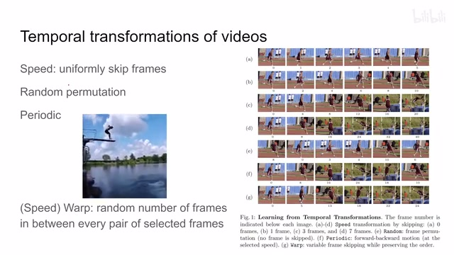
00:01:33–00:01:37 · 画面 02100:01:37–00:01:41 · 画面 022
00:01:37–00:01:41 · 画面 02200:01:41–00:01:45 · 画面 023
00:01:41–00:01:45 · 画面 023那么这个呢是作者在本文中涉及的探讨的四种这个 temporal transformation。那么下面我们来看这四种 transformation 的这个具体实现。那首先我们四种 transformation 那都编好号对吧，每次呢我们只选一个。然后呢对于这个 speed 来说呢，它有一个速度档位。那么首先我们只看这个变速度的情况下，它这个 01234 呢就变就对应着不同的这个速度的档位。然后呢就是播放速度的区别
00:01:45–00:01:49 · 画面 024
00:01:45–00:01:49 · 画面 02400:01:49–00:01:53 · 画面 025
00:01:49–00:01:53 · 画面 02500:01:53–00:03:53 · 画面 026
00:01:53–00:03:53 · 画面 026这个就是我采的这个帧的 index 是什么。这个是一个标准的速度变化。第二种是 randomrandom。这里我们注意就是我们既然是随机的交换帧的数量了，这里我们就不再进行对速度的调整了。因为假如说这两个帧本来是按照正常的顺序，你加速一下它可能就顺序就显得不正常了。所以对这种情况我们的速度就设置成没有加速的第三种呢是这个周期性的对吧。这个看起来数学表达式比较复杂啊，其实也很好理解。就是首先它是能兼容加速的，所以你看到它的各种值里面都有这个 2 的这个指数啊等等等等，这个你可以先忽略它。那么它的核心就是我选中一个 S，这个 S 就是我视频播放的最远点，就是我正向播这个视频播播播播到这个 S 这个位置
OK 停住，然后掉头反向的给它拨拨拨拨回去。那具体来看它产生的这个 index 虽然很复杂，但本质上就是从 0 一直拨拨拨拨到我们的这个 S 这个位置。这个 S 是随机选的嘛，然后再倒回去就可以了。但是在倒回去的过程中呢，我们注意到这里加了一个这个 delta，那么这个 delta 的作用就是我们在下回倒的时候我们使用的帧和我们正放时候使用视频的帧不一定完全的这个匹配。就是比如说你正向播放的时候可能踩的是 135 这样子，那倒向播放的时候踩的是 642 假装的像有一种周期性一样的。那这个呢是这个周期性。那最后呢是这个 Warp 就是变速度的
这里我们假设速度参数是 0，因为我们没有一个固定的速度来搞它。那么每两帧之间我跳过随机的 0 到 7 帧这样子，一共长度为 16 帧的片段。那么它的播放速度就是随机的。这种操作就是 Warp
00:03:53–00:04:10 · 画面 027
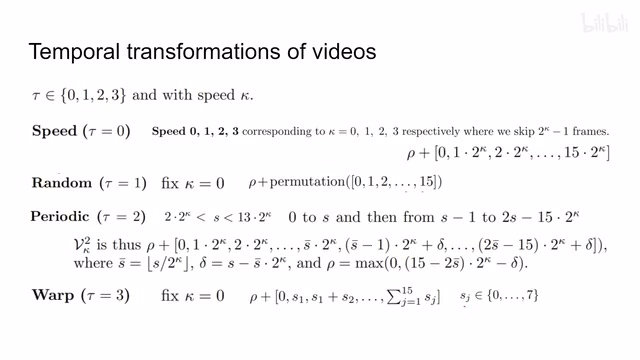
00:03:53–00:04:10 · 画面 027那么有了这上面的操作还有有了不同的这个还有这个不同的速度档位那作者要干什么呢很简单就是我们把我们的 transformation 过后的这个视频整个送到我们这个 3D convolutional networks 里面然后呢我们出来两个 head 那一个 head 叫做一个 motion type 它告诉我们我们对这个视频做了什么样的 transformation 那另一个 head 就是 speed type 它告诉我们假如说我们是做了这个 speed
00:04:10–00:04:40 · 画面 028
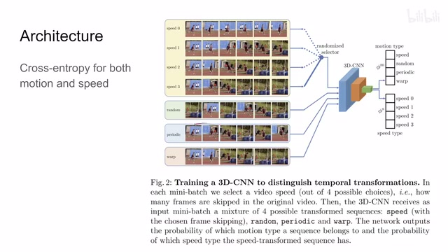
00:04:10–00:04:40 · 画面 028或者是这个 periodic 啊他假如说做了这两种的情况下我们实际播放的这个速度是什么样子的那么有了这两个辅助的 loss 呢又可以帮助让我们的这个 encoder 去更好的理解我们在时间轴上做的这一系列的操作那这里呢既然他们每个都有四类那就是一个多分类问题做着用 cross entropy 把这两个 loss 都计算出来直接把这两个 loss 加起来就可以了那这个呢是本文的一个结构
00:04:40–00:04:41 · 画面 029
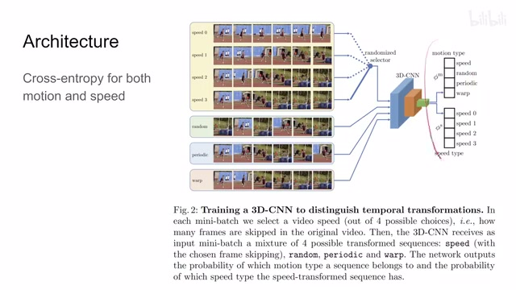
00:04:40–00:04:41 · 画面 02900:04:41–00:04:57 · 画面 030
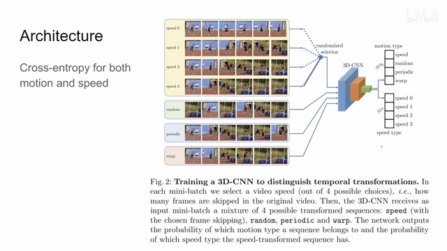
00:04:41–00:04:57 · 画面 03000:04:57–00:04:59 · 画面 031
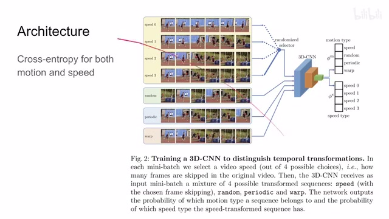
00:04:57–00:04:59 · 画面 03100:04:59–00:05:00 · 画面 032
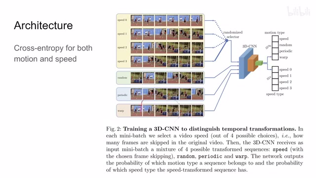
00:04:59–00:05:00 · 画面 032那这里呢我们快速展示一个结果就是作者先 pretrain 好了然后在这两个数据集上 fine-tuning 那下面呢是不同的这个训练的配置那作者的一个结论就是首先这个 warp 和这个 speed 是能够帮助我们更好地做这个 transfer learning 的
00:05:00–00:05:29 · 画面 033
00:05:00–00:05:29 · 画面 033然后 random 它的 transfer learning 的性能是最差的但是作者还说在训练的过程中 random 其实它的 loss 会很好就是很容易的会区别出 random 这一类来所以可能说就是 random 这个任务它过于简单了或者说相对于其他的 transformation 它过于明显了过于容易了所以它对我们的 encoder 的提升并不是很大
00:05:29–00:05:45 · 画面 034
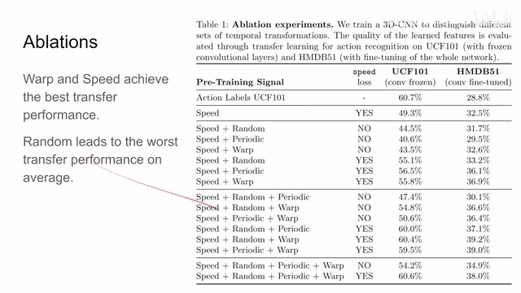
00:05:29–00:05:45 · 画面 034那么当然既然说到这里我们谈到 self-supervised learning 谈到 random 它的 loss 和它的性能不匹配的问题这也是一个 self-supervised learning 常见的一个问题就是我们不清楚我们的辅助的 loss 或者说 self-supervised 的 loss 我们应该训练到什么样的地步我们应该停止它因为你在实际训练的时候它的 loss 始终是在减减减减减
00:05:45–00:06:33 · 画面 035
00:05:45–00:06:33 · 画面 035它不像你有一个 validation set 当你看到我的性能不再提升了我就可以停了研究什么时候停止其实也是 self-supervised learning 里面很有意思的一个方向那么当然作者还汇报了一些其他的结果因为这篇文章也是有年头了感兴趣的朋友欢迎去原文查看这里介绍这篇文章还是为之后的一篇文章我们做一个小的铺垫那么以上就是我对这个文章的一个快速的整理那么感谢您的收看再见
00:06:33–00:06:33 · 画面 036
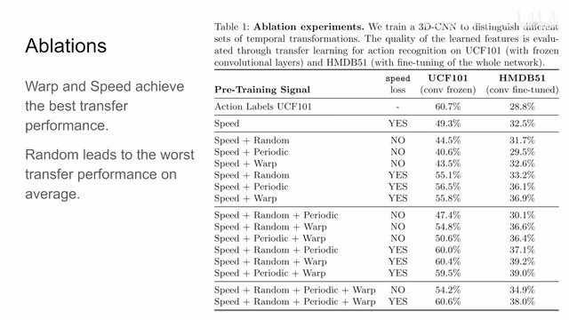
00:06:33–00:06:33 · 画面 036转写与来源说明 · 0 个自动复核提示
保留 16 个原始语音片段，0 个片段触发自动复核提示。提示仅用于定位可能的术语、重复或识别问题，不等于已确认错误。
讲解画面为源视频截图（640×360），不是可编辑 PPT 文件。全片按每秒 2 帧扫描内容变化，逐步展开页保留；连续动画保留代表画面。清晰度受源视频限制。
原视频：paper/合集_2026-10-16_表征学习/[论文速览]Video Rep. Learning by Recognizing Temporal Transformations[2007.10730].mp4
SHA-256：eb79efa3dda5a1bbbe0bab6c7fe1b39e813ad8bea77b2bd7bbedc122bad56737
全文按视频语音与画面制作。原论文可从上方链接下载；完整资料包保留全文、原始逐字稿、字幕和校对记录。